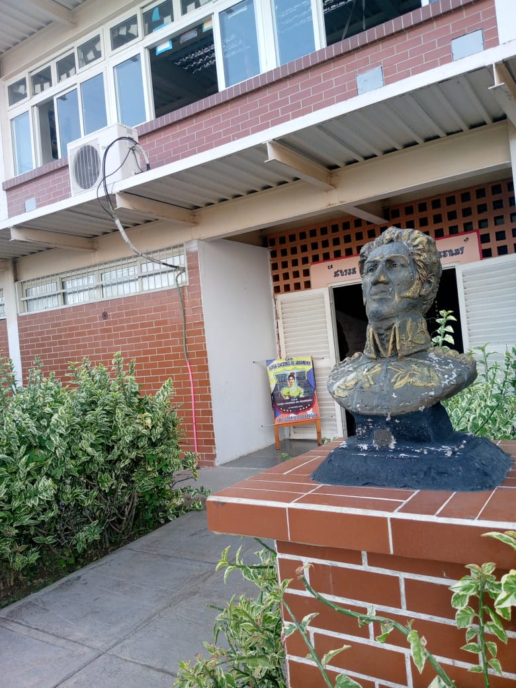
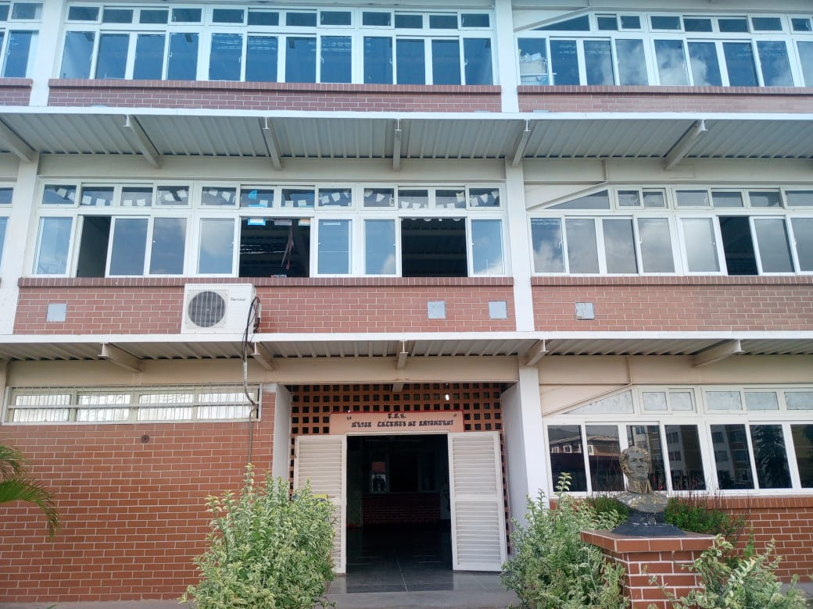
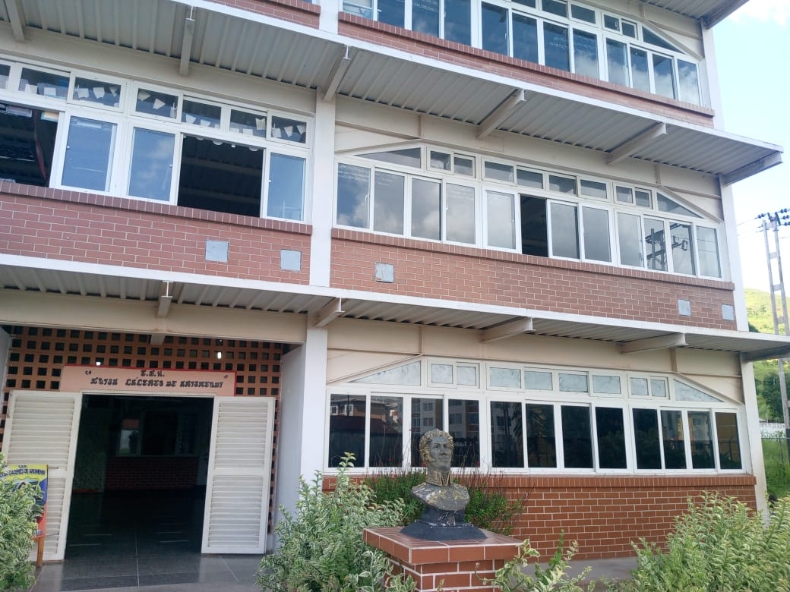
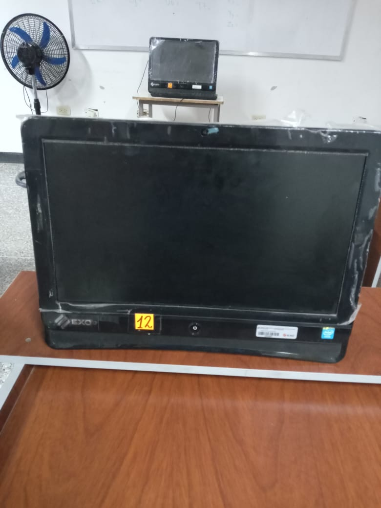
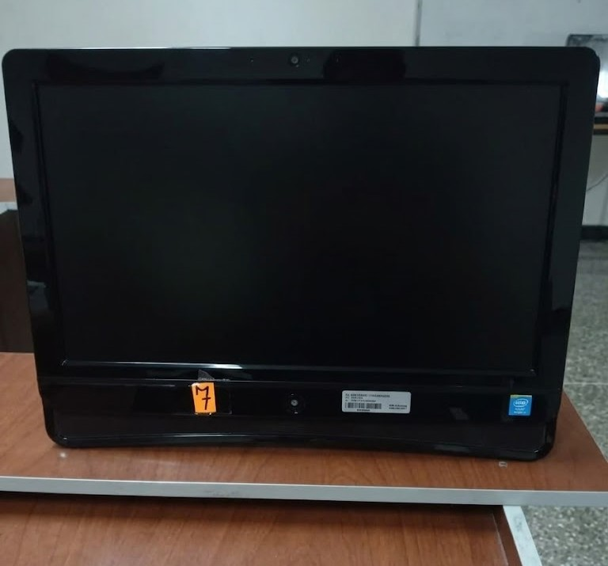
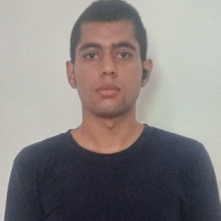

Misión
Formar nuevos(as) republicanos(as) humanistas, socialmente conscientes y comprometidos con el momento histórico coyuntural del país.




Conecta con personas que comparten tus intereses, participa en proyectos innovadores y contribuye al desarrollo tecnológico de nuestra institución.
Formar nuevos(as) republicanos(as) humanistas, socialmente conscientes y comprometidos con el momento histórico coyuntural del país.
Lograr transformar y potenciar la escuela hacia la educación liberadora con la participación protagónica de toda la comunidad educativa.
La Escuela Básica Nacional "Luisa Cáceres de Arismendi" ubicada en Ciudad Socialista "La Mora" fué fundada el 04 de Octubre del 2016 y la historicidad que dio origen al "Epónimo" que lleva por nombre, fué seleccionado a través de la consulta popular comunitaria realizada el 10 de marzo del 2016, de la cual por decisión unánime se tomo que la institución llevase el nombre de "Luisa Cáceres de Arismendi" por ser la heroína mas representativa del género femenino e insigne de la historia de la gesta de la independencia Venezolana. De este modo, el plantel educativo abrió sus puertas a la escolarización de más de 600 estudiantes que son atendidos en los Niveles de "Educación Inicial y Primaria", con la modalidad diurna conformado en 2 turnos: "Mañana y Tarde". La representativa insignia del plantel fué creada por el Prof. Wilmer Bracho y la Sra. Mirian Colmenárez.
El mantenimiento informático es un proceso fundamental que busca garantizar el correcto funcionamiento, rendimiento y durabilidad de los equipos de cómputo.
Es el conjunto de acciones que se realizan de manera programada y periódica para reducir la probabilidad de fallos. No se espera a que algo se rompa; se interviene basándose en el tiempo de uso o en intervalos predefinidos. Objetivo: Alargar la vida útil y evitar paradas inesperadas. Ejemplo: Cambiar el aceite de un motor cada 10,000 km o realizar una limpieza profunda a un equipo cada mes.
Es aquel que se ejecuta cuando el fallo ya ha ocurrido. Es la respuesta inmediata para reparar algo que dejó de funcionar o que presenta un comportamiento errático. Existen dos tipos: Inmediato (o de emergencia): Se repara en el momento porque la falla detiene el proceso. Diferido: Se detecta la falla, pero se programa la reparación para un momento más conveniente porque no afecta la seguridad o la producción inmediata..
Es el nivel más avanzado y analítico. Se basa en la monitorización del estado real del equipo mediante herramientas tecnológicas. No se cambia una pieza porque "ya pasó el tiempo" (preventivo), sino porque los datos indican que está a punto de fallar. Se utilizan variables como: Vibración: Análisis de oscilaciones fuera de lo común. Termografía: Detección de puntos de calor excesivo.
Antes y después del mantenimiento


Documentación detallada del procedimiento técnico
Revisión externa del equipo. Verificación de daños físicos, cables sueltos y estado general del gabinete. Estado del gabinete o carcasa. Presencia de polvo o suciedad visible. Cables de alimentación o periféricos dañados. Puertos USB, HDMI, VGA o de red en mal estado. Ruido extraño proveniente de ventiladores. Objetivo: Detectar fallas visibles antes de manipular el equipo.
CHECK: Gabinete, cables, puertos
Apagar equipo y desconectar de la corriente. Retirar todos los cables y periféricos conectados. Procedimiento: Apagar el sistema operativo correctamente. Desconectar el cable de alimentación. Retirar periféricos (mouse, teclado, monitor, USB, etc.). Presionar el botón de encendido durante 5 segundos para descargar energía residual. Importante: Nunca realizar mantenimiento con el equipo conectado.
⚠️ ESPERAR 5 MINUTOS
Preparar: destornilladores, aire comprimido, alcohol isopropílico, pinceles y pulsera antiestática. Herramientas recomendadas: Destornilladores Phillips y planos. Aire comprimido. Alcohol isopropílico (90% o más). Brocha o pincel antiestático. Paño de microfibra. Pulsera antiestática. Pinzas de precisión. Recomendación: Usar herramientas antiestáticas para evitar daños en la placa madre.
LISTA: 8 herramientas
Mesa limpia, bien iluminada y sin estática. Colocar manta antiestática si está disponible. Características del área: Superficie limpia. Buena iluminación. Espacio amplio para colocar componentes. Sin líquidos cerca. Uso de tapete o pulsera antiestática. Objetivo: Evitar pérdida de piezas y proteger los componentes electrónicos.
ZONA: Limpia y seca
Limpiar superficie externa con paño de microfibra. Eliminar polvo de rejillas de ventilación.
USAR: Paño seco
Pantalla: paño de microfibra seco. Marco y base: paño ligeramente humedecido con alcohol.
NO: Productos abrasivos
Teclado: voltear y sacudir suavemente. Mouse: limpiar sensor y patines. Usar aire comprimido.
CUIDADO: Teclas sueltas
Enrollar cables ordenadamente. Limpiar conectores con alcohol isopropílico. Revisar daños.
ORGANIZAR: Con velcro
Retirar tornillos laterales. Deslizar panel con cuidado. Usar pulsera antiestática. Procedimiento: Colocar el equipo sobre una superficie plana. Retirar los tornillos laterales del gabinete con un destornillador adecuado. Deslizar o retirar el panel lateral con cuidado. Colocar los tornillos en un recipiente para no perderlos. Recomendaciones: Utilizar pulsera antiestática para evitar descargas eléctricas. No forzar el panel si está ajustado. Evitar tocar directamente la placa madre. Objetivo: Permitir el acceso seguro a los componentes internos para su limpieza y revisión.
⚠️ ANTES: Tocar metal
Sostener lata vertical. Soplado cortos. Mantener ventiladores fijos mientras se sopla.Cómo usarlo correctamente: Mantener la lata en posición vertical. Realizar soplidos cortos. Mantener una distancia aproximada de 10 a 15 cm del componente. Evitar que los ventiladores giren mientras se sopla aire. Zonas donde se aplica: Placa madre Ventiladores Fuente de poder Ranuras de memoria RAM Tarjeta gráfica Advertencia: No inclinar la lata porque puede expulsar líquido y dañar los circuitos.
NO: Inclinar lata
Cepillar suavemente placas. Usar hisopos con alcohol para contactos. No tocar circuitos. Herramientas recomendadas: Brocha antiestática Hisopos Alcohol isopropílico Paño de microfibra Procedimiento: Cepillar suavemente la placa madre. Limpiar conectores con hisopos ligeramente humedecidos. Retirar polvo de tarjetas de expansión. Verificar que no queden residuos. Importante: Nunca aplicar alcohol directamente sobre la placa; debe aplicarse primero en el hisopo.
SUAVE: Cerdas antiestáticas
Limpiar aspas con pincel. Verificar giro libre. Lubricar si es necesario (bearing). Pasos: Sujetar el ventilador para que no gire. Limpiar las aspas con una brocha suave. Retirar el polvo acumulado en los bordes. Verificar que el ventilador gire libremente. Mantenimiento adicional: Si el ventilador produce ruido, puede aplicarse lubricante en el eje (bearing). Beneficio: Evita el sobrecalentamiento del procesador y otros componentes.
FIJAR: No dejar girar
Retirar disipador. Limpiar pasta térmica vieja con alcohol. Preparar para nueva aplicación. Procedimiento: Retirar el disipador aflojando los tornillos o seguros. Limpiar la pasta térmica antigua con alcohol isopropílico. Limpiar la superficie del procesador y del disipador. Aplicar nueva pasta térmica en pequeña cantidad. Volver a colocar el disipador. Recomendación: Aplicar solo una pequeña gota de pasta térmica en el centro del CPU.
LIMPIO: Sin residuos
Limpiar slots RAM con aire. Revisar PCIe. Verificar conectores SATA limpios. Procedimiento: Retirar cuidadosamente la memoria RAM. Limpiar las ranuras con aire comprimido. Revisar que no haya polvo o residuos. Volver a insertar los módulos correctamente. Componentes que usan ranuras: Memoria RAM Tarjeta gráfica Tarjeta de red Tarjeta de sonido Importancia: Una ranura sucia puede provocar fallos de reconocimiento del hardware.
SOPLO: Corto y seco
Aplicar gota pequeña en centro CPU. Montar disipador con presión uniforme. Conectar fan. Procedimiento: Limpiar la pasta térmica antigua con alcohol isopropílico. Secar la superficie del procesador y el disipador. Aplicar una pequeña cantidad de pasta térmica en el centro del CPU. Colocar nuevamente el disipador con presión uniforme. Conectar el ventilador del procesador. Recomendación: La cantidad ideal es similar al tamaño de un grano de arroz o una arveja. Beneficios: Reduce la temperatura del procesador. Mejora el rendimiento del sistema. Aumenta la vida útil del CPU.
CANTIDAD: Tamaño arveja
Retirar módulos. Limpiar contactos con borrador blanco. Reinsertar hasta clic. Verificar BIOS. Importancia del mantenimiento: Si los contactos de la RAM están sucios, pueden producirse errores como: Pantalla azul Reinicios inesperados El sistema no reconoce la memoria Procedimiento: Retirar los módulos de RAM presionando las pestañas laterales. Limpiar los contactos dorados con una goma de borrar blanca. Eliminar residuos con aire comprimido. Insertar nuevamente la memoria RAM hasta escuchar un clic. Recomendación: Instalar la memoria en los slots correctos según la configuración de la placa madre para aprovechar el dual channel.
CLICK: Ambos seguros
Limpiar rejilla y ventilador interno. Verificar cables de alimentación. No abrir fuente (condensadores). Mantenimiento básico: Limpiar la rejilla del ventilador. Eliminar polvo acumulado. Revisar cables de alimentación. Verificar que el ventilador funcione correctamente. Advertencia ⚠️: Nunca abrir la fuente de poder, ya que contiene condensadores que almacenan alto voltaje, incluso cuando está desconectada. Problemas comunes: Apagados repentinos Reinicios del sistema Ruido excesivo del ventilador Olor a quemado
⚠️ PELIGRO: Alto voltaje
Verificar conexiones SATA. Revisar estado SMART. Desfragmentar si es HDD. Optimizar SSD. Mantenimiento recomendado: Revisar cables SATA y de alimentación. Limpiar el polvo alrededor del dispositivo. Verificar estado del disco con programas de diagnóstico. Herramientas útiles: CrystalDiskInfo CHKDSK SMART Monitoring Optimización: Desfragmentar discos HDD. No desfragmentar SSD. Mantener al menos 20% de espacio libre.
CHECK: CrystalDiskInfo
Windows Update o equivalente. Instalar parches de seguridad. Reiniciar y verificar. Ciclo de Reinicio: Explica que algunas actualizaciones requieren hasta 2 o 3 reinicios para aplicarse correctamente en el registro del sistema. Opciones Avanzadas: Menciona la importancia de revisar "Actualizaciones opcionales", donde suelen estar parches de compatibilidad específicos. Verificación de Compilación: Al finalizar, usar el comando winver para asegurar que el cliente tiene la versión más estable y reciente.
TIEMPO: 30-60 min
Actualizar GPU, chipset, audio y red. Usar sitios oficiales. Crear punto de restauración. Orden de Instalación: Se recomienda instalar primero el driver del Chipset, seguido de LAN/Wi-Fi y finalmente Video y Audio. Drivers de Terceros vs. Oficiales: Advierte sobre evitar programas de "auto-instalación" de drivers sospechosos; siempre priorizar la web del fabricante (ASUS, MSI, Dell, HP, NVIDIA, AMD). Punto de Restauración: Es el "seguro de vida" del técnico. Si un driver causa un pantallazo azul (BSOD), puedes volver atrás en segundos.
FUENTE: OEM oficial
Actualizar definiciones. Escaneo completo del sistema. Configurar protección en tiempo real. Exclusiones: Configurar exclusiones para software de trabajo pesado si es necesario para evitar falsos positivos. Seguridad por Capas: Mencionar que además del antivirus, es clave tener activo el Firewall y el Filtro de Contenido en el navegador. Análisis Offline: Para equipos muy infectados, se recomienda un escaneo antes de que el sistema operativo cargue (Boot-time scan).
SCAN: Completo mensual
Verificar temperaturas. Probar todos los puertos. Chequear rendimiento. Documentar cambios. Pruebas de Estrés: Utilizar herramientas como AIDA64 o Prime95 para la CPU, y FurMark para la GPU. Monitoreo Térmico: Como bien pusiste (OK: Temps < 70°C), explica que si pasa de 85-90°C bajo carga, el equipo hará thermal throttling (bajará su potencia para no quemarse). Checklist de Periféricos: Probar cada puerto USB, el jack de audio, el teclado (todas las teclas) y el estado de salud del disco duro (SSD/HDD) con CrystalDiskInfo.
OK: Temps < 70°C
Estudiantes de PNF en Informática
Desarrollador

Desarrollador
Desarrollador